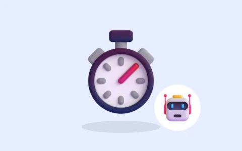
반복 업무를 20분 줄이는 도구
하루 반복하는 일 3가지를 정리하고 한 가지 자동화 흐름도를 만드세요.
시작하기 · 기획 초안이 아이디어로 만들기 ↗
AI·비즈니스·음악·디자인·지역·안전·공익까지, 12개 분야의 실제 기획 템플릿을 검색해 보세요. 외부 실시간 정보나 공고가 아니라 아이디어 실행을 위한 초안입니다.
전체 120개 콘텐츠를 표시합니다.

하루 반복하는 일 3가지를 정리하고 한 가지 자동화 흐름도를 만드세요.
하나의 강의 자료를 개념·질문·퀴즈 세 묶음으로 재구성하세요.
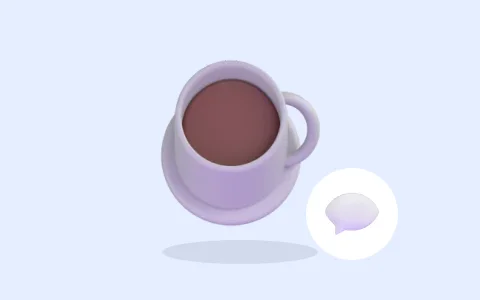
알레르기 정보를 확인할 수 있는 메뉴 설명 시안을 만드세요.
할 일·시간·우선순위를 표 한 장으로 정리하세요.
자신의 음성 메모를 정리하고 첫 실행 목록을 만드세요.
공개 또는 본인 자료 20개를 태그로 정리하세요.
답변 범위와 실패할 때의 대응 규칙부터 설계하세요.
같은 질문의 출처 세 개를 대조하는 검증표를 만드세요.
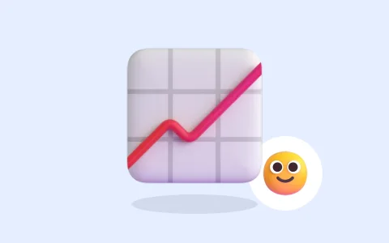
개인정보를 공유하지 않고 수동 기록 데이터만 시각화하세요.
대상 고객·문제·해결 방식·위험을 한 장으로 정리하세요.
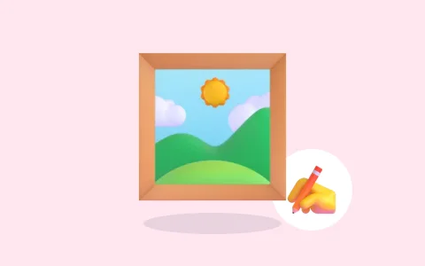
서체 크기와 여백에 집중한 포스터를 제작하세요.
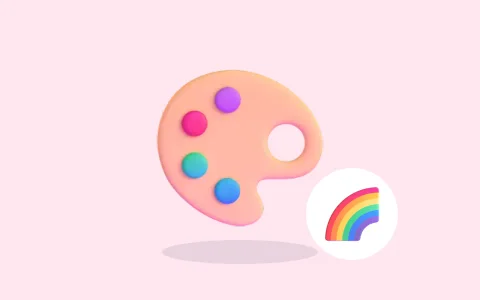
주색 1개와 강조색 1개로 디자인 토큰을 구성하세요.
첫 장면·핵심 가치·행동 유도를 담은 스토리보드를 만드세요.
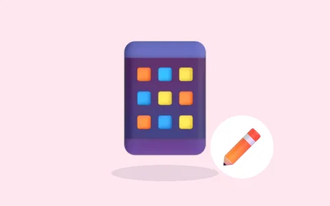
사용자가 5초 안에 이해할 수 있는 화면을 구상하세요.
기본 도형으로 독창적인 글자 마크를 만들어보세요.
타이포그래피만으로 인상을 만드는 연습을 하세요.
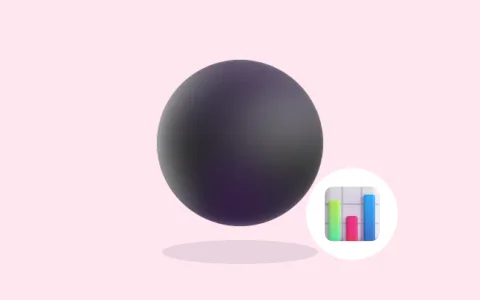
흑백 대비와 정렬만으로 내용을 전달하세요.
필수 정보만 담아 모바일 카드로 만드세요.
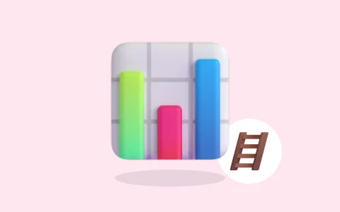
복잡한 설명을 세 장면으로 바꾸세요.
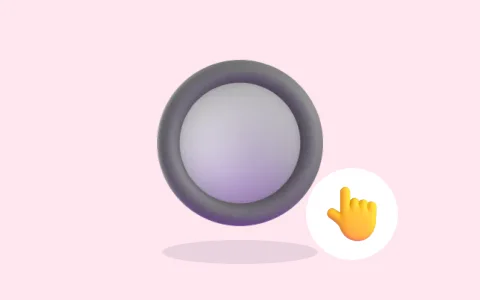
명료성과 접근성을 기준으로 개선안을 선정하세요.
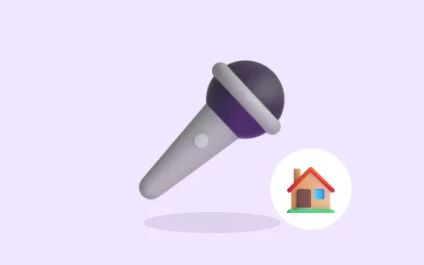
공연의 분위기와 일시만 담은 짧은 콘티를 작성하세요.
박수와 몸동작으로 4마디 리듬을 만들어보세요.
작품 배경과 감상 포인트를 쉬운 말로 설명하세요.
관객·출연자·장소·예산을 정리하세요.

하나의 지역 음악을 근거 출처와 함께 소개하세요.
연습 목표와 참여 규칙을 먼저 정하세요.
하루 10분 연습 체크리스트를 만드세요.
저작권이 없는 독창적인 이야기로 기획하세요.
음악을 듣고 3가지 시각 키워드를 뽑으세요.
쉽게 답할 수 있는 질문 다섯 개를 작성하세요.
첫 3초·중간·끝 장면의 메시지를 정하세요.
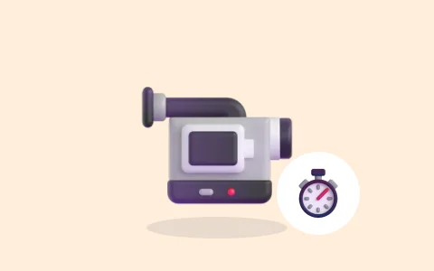
문제–시도–결과 세 장면으로 촬영표를 만드세요.
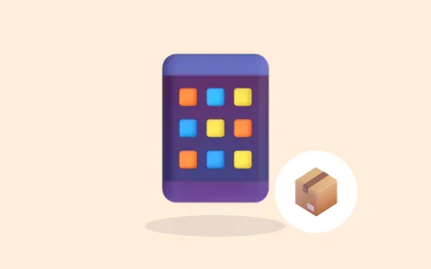
자연광과 배경만 바꿔 세 컷을 비교하세요.
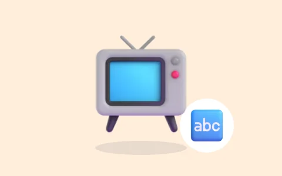
자막 길이·대비·체류시간 기준을 만드세요.
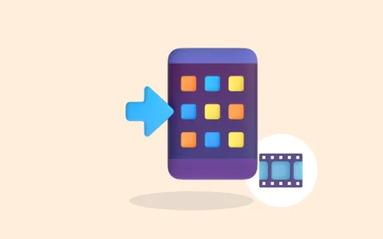
9:16 프레임별 한 문장 내레이션을 작성하세요.
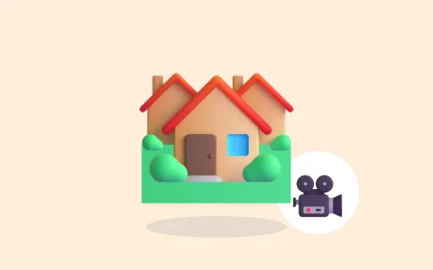
공개 촬영 가능 장소와 초상권을 확인하세요.
동의를 받는 대화형 질문 구성을 만드세요.
측정 가능한 변화를 가짜 없이 보여주세요.
핵심 내용 3개를 쇼츠로 요약하세요.
시각적 안내만으로 행동을 전달하는 실험을 하세요.
실제 결과물 3개와 기여도를 정리하세요.
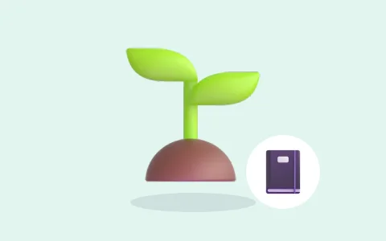
학습 목표와 만든 결과물을 구체적으로 남기세요.
친구 2명에게 구체적 행동 사례를 물어보세요.
업무 성과를 사실에 근거해 수정하세요.
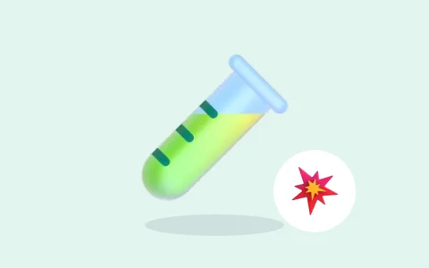
무엇을 가정했고 어떤 결과가 나왔는지 정리하세요.
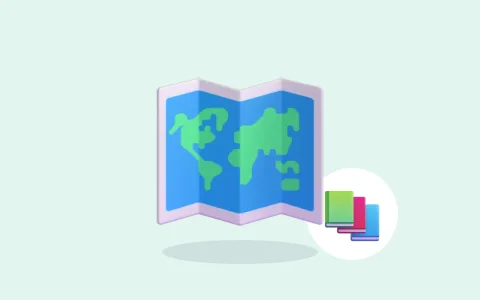
무료 자료와 성취 확인 방법을 정하세요.
대상과 제공 가치를 짧게 표현하세요.
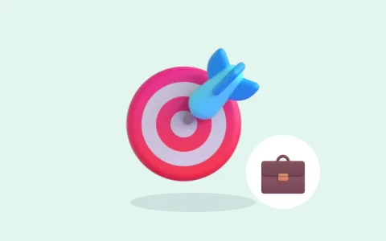
일정·범위·완료 기준을 문서로 만드세요.
시간대·자료 권한·의사결정 기준을 정하세요.
상황·행동·결과를 한 장에 기록하세요.

누가 왜 필요할지 가설을 정리하세요.
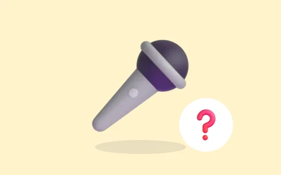
유도 질문 없이 문제를 확인하세요.
비용·시간·대안 가격을 비교하세요.
문제·실현성·성장·팀을 쉬운 말로 써보세요.
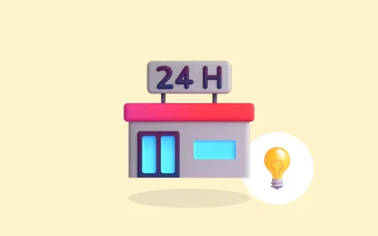
허락받은 현장 문제를 하나만 선정하세요.
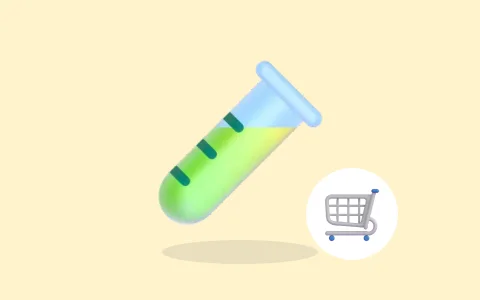
실제 신청 대신 클릭·질문·관심을 관찰하세요.
문제·해결·범위·가격 근거를 기록하세요.
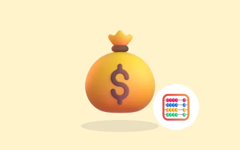
최소/기준/확대 시 비용표를 만드세요.
사용자 목소리를 주제별로 분류하세요.
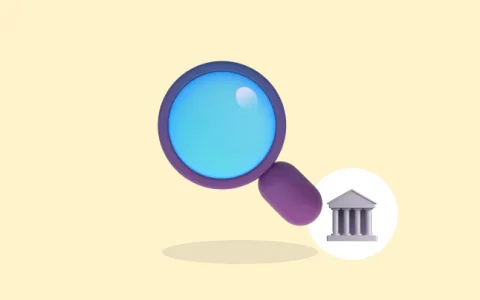
사업자 상태·지역·업력을 먼저 확인하세요.

브라우저 안에 저장되는 체크리스트를 만드세요.
태그·필터 기능을 단순 HTML로 구현하세요.
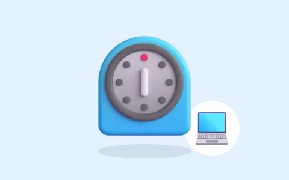
시작·정지·접근성을 갖춘 도구를 만드세요.
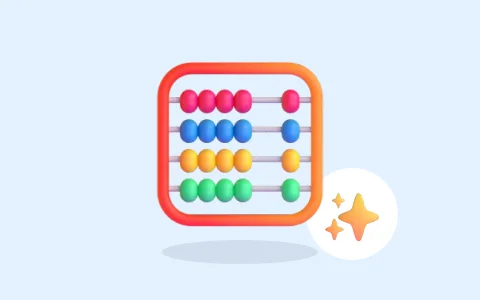
입력 오류를 친절히 알려주는 UI를 설계하세요.

출처가 확실한 변환 규칙을 사용하세요.
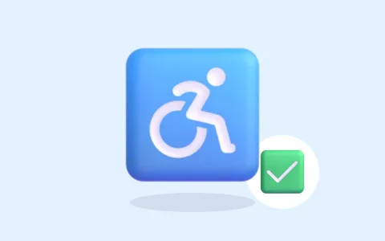
키보드·대비·대체문구를 시험하세요.
사용권과 기여 가이드라인을 확인하세요.
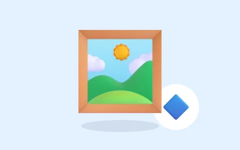
이미지 파일 없이 벡터 그래픽을 그려보세요.
설치·사용·문제·한계까지 명확히 쓰세요.
원본 백업과 삭제 방지 규칙을 먼저 정하세요.

현장 문제를 개인 주소 없이 기록하세요.
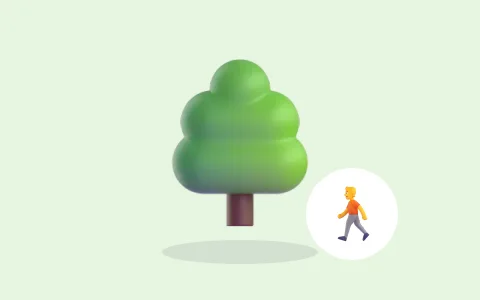
공식 개방정보와 이동 경로를 확인하세요.
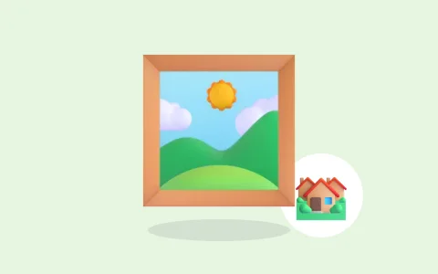
공공장소 이용 허가 조건을 검토하세요.
실제 운영 가능 시간을 확인하세요.

업체의 사실·사진 사용허락을 확인하세요.
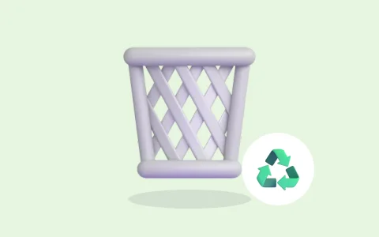
전후 폐기물량을 자발적으로 측정하세요.
개인정보 공개 없는 동의서를 준비하세요.
장소 관리·분실 규칙을 정하세요.
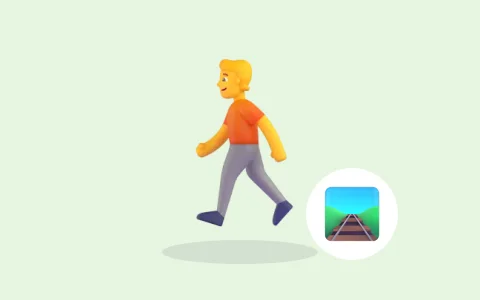
보행 접근성 문제를 현장 기록으로 확인하세요.
모집 목적·역할·일정을 명료하게 써보세요.

계량기 기록과 절감 가설을 비교하세요.
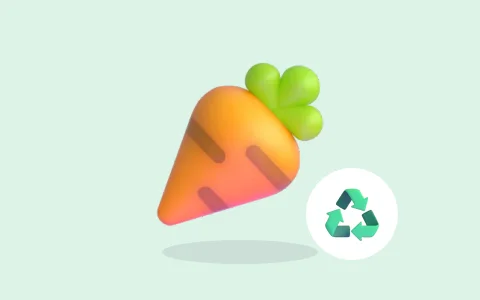
유통기한·식품 안전기준을 지키며 기록하세요.
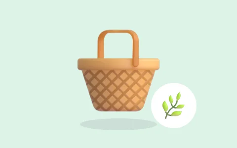
변화를 과장하지 않고 횟수를 기록하세요.
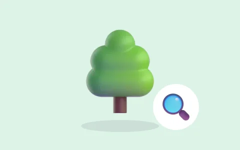
위치 노출이 민감한 장소는 빼세요.

침수 위험 구역에는 들어가지 마세요.
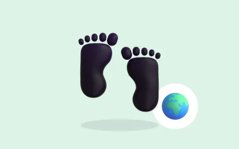
측정 모델의 가정을 함께 표시하세요.
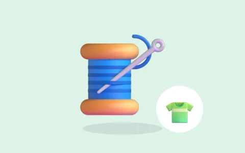
장비 안전·장소·참가자를 고려하세요.
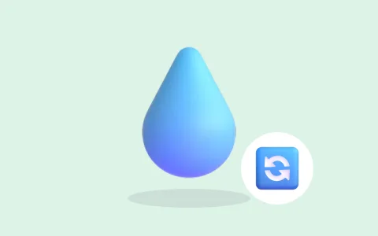
위생상 식수와 생활용수는 구분하세요.
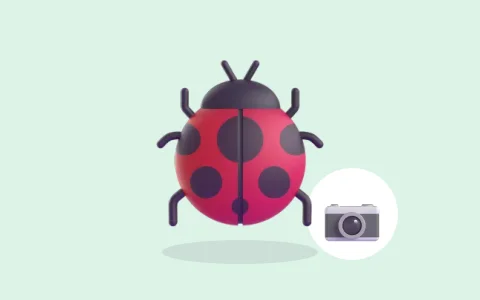
생물 보호와 사진 권리를 지켜 주세요.
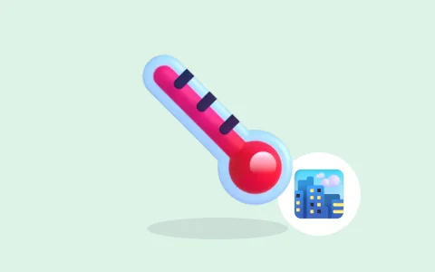
안전한 곳에서 시간대별 온도를 비교하세요.

인원별 필수품 체크리스트를 작성하세요.
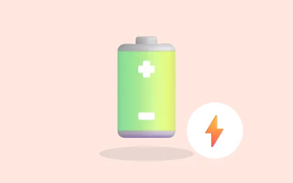
LED·라디오·충전기 소비 Wh를 계산하세요.
공개 게시 없이 가족끼리만 저장하세요.
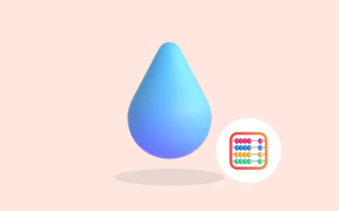
개인과 기후에 맞게 충분한 양을 정하세요.

CDC 등 공식 식품안전 지침을 확인하세요.
현지 대피소·긴급 연락처를 확인하세요.
방문 지역을 미리 내려받고 경로를 확인하세요.
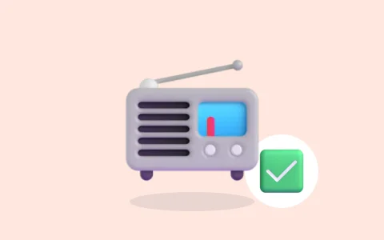
해당 국가의 공식 경보 채널을 조사하세요.
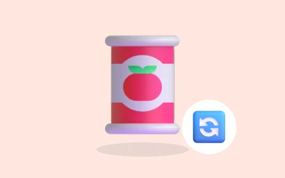
포장 소비기한·보관조건을 기록하세요.
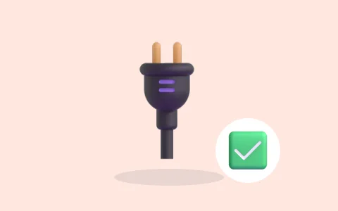
실내 연료발전기 사용 금지와 인증을 먼저 확인하세요.
합법적 공개 사진으로 도시 소개를 만들어보세요.
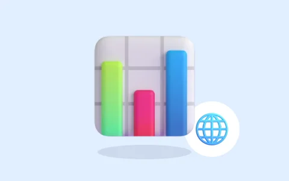
같은 지표·기준년도를 먼저 확인하세요.
원어민이 이해할 수 있도록 짧게 번역하세요.
서로 다른 시간대·저작권 조건을 기록하세요.

정부 공식 원문과 현재 사업 단계를 구분하세요.
당사자 관점과 확인 가능한 사례만 쓰세요.
최신 공식 연락처·경보 원문을 링크하세요.
실제 일정과 주최기관을 교차 확인하세요.
편견과 단정 표현을 제거하세요.
참여 목적·자료 공유·연락 시간을 정하세요.
당사자 의견을 먼저 듣고 쉬운 설명서를 쓰세요.
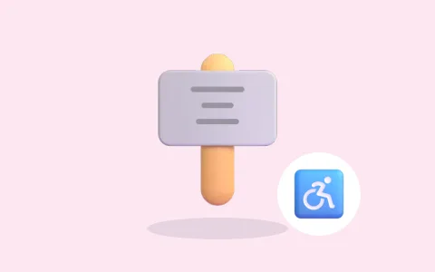
읽기·색 대비·글자 크기를 점검하세요.
참가자 보호·촬영 동의·장소 사용을 정하세요.
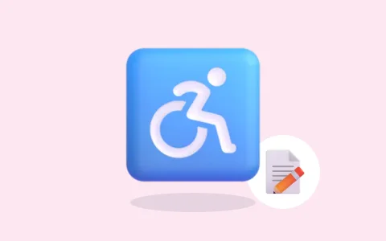
현장 당사자 의견과 관련 규정을 확인하세요.

보호자 동의·인솔·안전을 먼저 설계하세요.
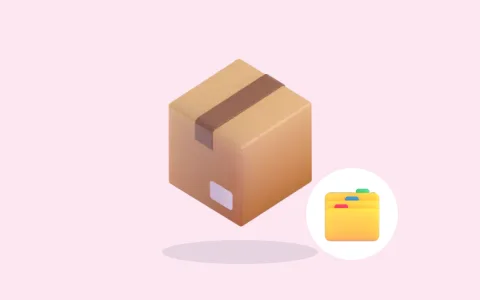
공식 요청 목록과 실제 수요를 비교하세요.
참여자 개인정보 없이 확인 가능한 성과만 남기세요.
무리한 개인정보 수집 없이 활동을 기획하세요.
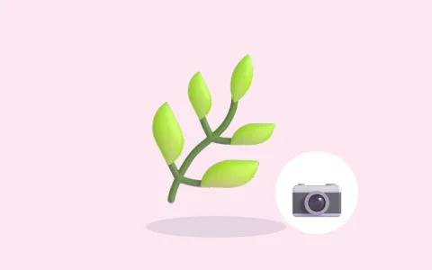
작품 사용권과 참여자 동의를 확보하세요.
사업·재단·자원봉사 권한을 구분하세요.